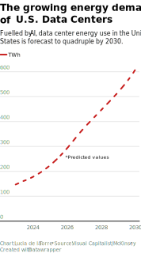
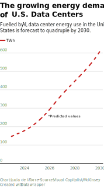
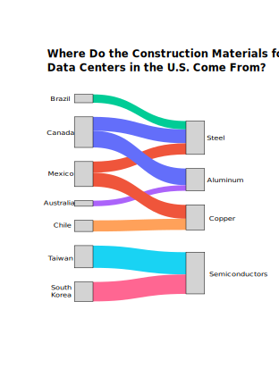
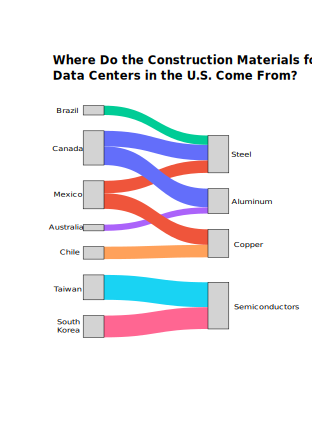
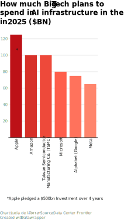
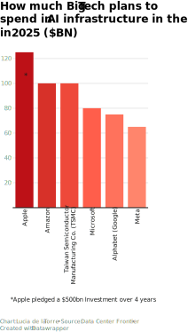

Last week, President Donald Trump announced sweeping tariffs on critical construction materials, including steel, aluminum, and copper, sending shockwaves through the tech industry. These measures, aimed at boosting domestic manufacturing, could have far-reaching consequences for the expansion of data centers—facilities that are essential for artificial intelligence (AI) infrastructure. Industry leaders warn that these policies may undermine U.S. competitiveness in AI innovation by driving up costs and creating uncertainty.
The United States dominates the global data center market, operating more facilities than all other countries combined—ten times more than any single nation. These centers are the backbone of America’s AI ambitions, providing the computational power needed for generative AI models like ChatGPT and Bard. However, their expansion is now threatened by tariffs that increase costs for key materials.


Data centers already account for 2% of U.S. electricity consumption—a figure projected to quadruple by 2030 as AI adoption accelerates. Meeting this demand will require massive investments in infrastructure and power generation. Yet rising material costs due to tariffs could delay these critical expansions.
 

The construction of data centers relies heavily on imported materials like steel, aluminum, and copper:
- Steel: Subject to a 25% tariff under Section 232 since March 12. Imports from Canada and Mexico are exempt if USMCA-compliant.
- Aluminum: Tariff increased from 10% to 25%, with exemptions for USMCA-compliant imports extended indefinitely on April 2.
- Copper: Under investigation for potential tariffs capped at a possible rate of 25%. Prices have already surged in anticipation.
 

"Instability benefits nobody," says Prof. Susan Ariel Aaronson of George Washington University.
Despite rising costs, major tech companies continue to invest heavily in AI-focused data centers:
- Apple: Committed $500 billion over four years to expand data center capacity and build an AI server manufacturing facility in Texas.
- Amazon: Announced plans to invest over $100 billion in new data centers in 2025—before the tariffs were imposed.
- Microsoft: Allocated $80 billion for AI-enabled data centers this fiscal year—pre-tariff projections.
- Google/Alphabet: Projected $75 billion in capital expenditures for AI infrastructure in 2025—pre-tariff estimates.
 

The stakes are high—not just for Big Tech but for America’s position as a leader in innovation. As Prof. Aaronson aptly puts it, “Instability benefits nobody.” Whether the U.S. can navigate these challenges will determine its ability to maintain its edge in the global AI race.